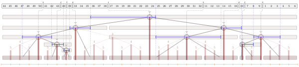

Conference paperALENEX 2023January 2023
Multiway Powersort
 Read online
Read online
- Material
This paper describes Multiway Powersort, an extension of our adaptive mergesort variant for merging several runs at once while still adapting nearly optimally to existing runs. Our C++ implementation of 4-way Powersort (GitHub) achieved a 15–20% speedup over the standard 2-way Powersort (see Fig 3–6).
Since September 2021, Powersort is used in CPython, PyPy, and numpy instead of Timsort’s suboptimal merge policy; see our ESA 2018 paper for details and background. In scenarios where comparisons are rather expensive (in particular when sorting pointers as in implementations of Python or Java), Timsort/Powersort offers a clear advantage for many inputs and comes with no significant detriment to the worst case.
When comparisons are cheap, memory transfers become a major influence, and multiway merging can subsantially reduce these. This effect has been demonstrated repeatedly for Multiway Quicksort. For adaptive Mergesort, a generalization to multiway merging is not obvious, but for Powersort, it can be achieved (§3), resulting in significant speedups.
This work originated in an Masters dissertation project of William Cawley Gelling.

k-way Powersort · on a page of its own

Invited talk Quicksort, Timsort, Powersort
Covers this paper and ESA 2018.

Also recorded: official PyCon recording · HPI Colloquium, Hasso-Plattner-Institut Potsdam

Powersort: Clean explanation and self-contained analysis
The effect of explaining (standard 2-way) Powersort to loads of people was that I found much clearer ways to introduce it compared to the original description. §3 of this paper gives (in my biased opinion) the best introduction to the algorithm (multiway or not).


The merge tree of Powersort (top part of Fig. 1)
Moreover, §3.3 gives a completely elementary and self-contained proof of the optimality of Powersort’s merge cost.
Relation to Other Papers
The algorithms of this paper generalize Peeksort and Powersort from the ESA 2018 with Ian Munro.
Intended Audience
This paper is accessible to all computer scientists.
Reference
William Cawley Gelling, Markus E. Nebel, Benjamin Smith, and Sebastian Wild: Multiway Powersort. Symposium on Algorithm Engineering and Experiments (ALENEX 2023). doi:10.1137/1.9781611977561.ch16
BibTeX
@inproceedings{CawleyGellingNebelSmithWild2023,
title = {Multiway {Powersort}},
author = {Cawley Gelling, William and Markus E. Nebel and Benjamin Smith and Sebastian Wild},
booktitle = {Symposium on Algorithm Engineering and Experiments (ALENEX) 2023},
pages = {190--200},
publisher = {SIAM},
year = {2023},
doi = {10.1137/1.9781611977561.ch16},
eprint = {2209.06909},
urlHidden = {https://www.wild-inter.net/publications/cawley-gelling-nebel-smith-wild-2023}
}
Timeline
- Aug 2022 written
- Sep 2022 arXiv 2209.06909
- Jan 2023 ALENEX 2023; conference talk at ALENEX 2023
- 22 Apr 2023 invited talk at PyCon US 2023